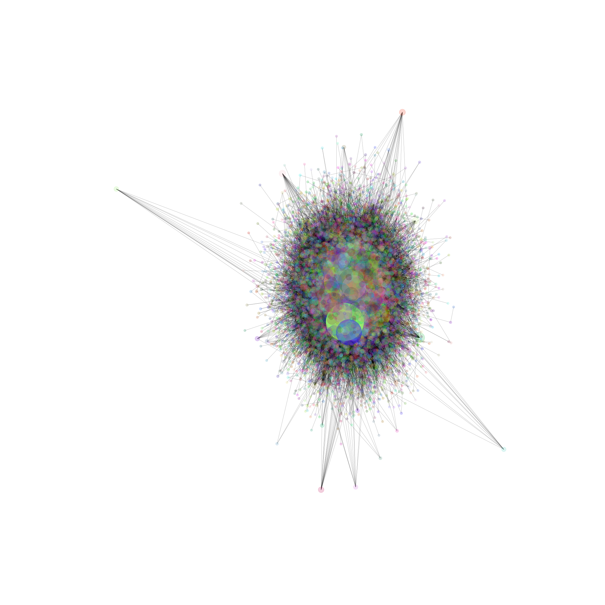

Peter Parker
The Amazing SpidermanMost quotes
Does things with webs
Sometimes student, sometimes scientist and sometimes photographer, Peter Parker is a full-time super hero better known as the web-slinging and wall-crawling Spider-Man.

James Howlett
WolverineMost amount of teams
Has metal in hands
Cursed with a berserker fury, the violent mutant known as Wolverine has a reputation both an outstanding superhero and as a lethal killer.
About Earth-616
Welcome to Earth-616, one of the many Marvel Universes. To accommodate for multiple storylines and avoid conflicts in the stories, i.e. in one story, Spiderman is the hero and suddenly turns into a villain, Marvel decided in an early stage to introduce the multiverse. In all of its essence, The Multiverse is multiple timelines for the marvel characters. You might remember Spiderpig (actually Spider-Ham or Peter Porker), an augmentation of Spiderman where he is a pig. This is, in fact, canon in the marvel universe and happened on Earth-8311. To distinguish between the universes, marvel uses an index system in the Earth-#Number syntax. The central universe is Earth-616, which we explored in this project.

The data sets
This project works with three data sets: The characters, the characters' quotes and the teams each character is a part of. All data is retrieved from the Marvel Fandom Wiki. After preprocessing the data sets, we are left with two: The characters and the teams.
The key attributes of the data set consist of the name of the characters, the alter egos, the links to other characters, which teams they are allied to and the quotes from the characters.
The quotes from the characters will be used for text analysis. Here we will first look at the general words of the teams with the most text. Lastly, we will create a network consisting of all the characters and see how that looks.
As some might be interested in the characters in the data set, how many teams they are a part of, whether they are positive or negative, or other small stats, we have implemented a search function for the characters at the bottom of the page.
Team wordclouds
Shown in no particular order are the 20 teams with most words.
(Descriptions of the teams are retrieved from the marvel wiki)
.png)
50-State Initiative
"In the aftermath of the Civil War, the pro-registration side stood victorious over the anti-registration and Tony Stark was appointed Director of S.H.I.E.L.D. The 50-States Initiative was launched, which called for one S.H.I.E.L.D. sponsored superhuman team for each state. "
.png)
Avengers
"The Avengers are Earth's foremost major organization of costumed superhuman crimefighters, adventurers and heroes dedicated to safeguarding the world from any threat beyond the power of conventional peacekeeping forces or any which any of them can't handle alone. "
 (Earth-616).png)
Avengers (Heroes Reborn)
"During the Onslaught event, a group of heroes seemingly sacrificed their lives in order to try and stop the menace. Among the heroes were members of the Avengers, Earth's mightiest heroes. "
.png)
Avengers Unity Division
"After the war between the Avengers and the X-Men, Captain America realized that the Avengers should have done more to help the mutant population. As a result, he formed a new sub-team of Avengers in hopes of unifying mutants and humans as one. "
.png)
Defenders
"While trying to defend Earth from the extra-dimensional, demonic beings called the Undying Ones, Sorcerer Supreme Dr. Strange manipulated Prince Namor into aiding him, and then teamed with the monstrous Hulk to ward off the demons.[ "
.png)
Fantastic Four
"The Fantastic Four (FF) are a superhero team of adventurers who accidentally received powers from "cosmic radiation" during a short trip to space. "
.png)
Future Foundation
"Reed Richards has become discouraged by Earth's scientists' view of and applications of science which causes more problems. Richards decided to leave the Singularity Conference body, to put together a new group of free-thinking individuals to plan for a better future for all of humanity and Earth. "
.png)
Guardians of the Galaxy
"A group of heroes who opposed the Phalanx conquest of the Kree system (and many who had opposed Annihilus incursion into their universe), who banded together in an attempt to prevent any further catastrophes from ever occurring. "
 (Earth-616).png)
Heroes for Hire (Knight & Wing)
"During the Civil War; Misty Knight and Colleen Wing were contacted by Iron Man, Reed Richards, and Spider-Man to reform Heroes for Hire in order to track down superhumans refusing to comply with the Superhuman Registration Act. "
 (Earth-616).png)
Hive (Symbiotes)
"To facilitate his deicidal crusade, the dark god Knull created a species of amorphous symbiotic predators from the "living abyss", using them to conquer planets and consume entire civilizations. "
.png)
Illuminati
"The Illuminati were a covert think-tank originally consisting of Mister Fantastic, Iron Man, Professor X, Doctor Strange, Black Bolt, and Namor. "
.png)
Marvel Knights
"The Marvel Knights moniker was used as a nickname for Daredevil's unnamed superhero team. The team initially formed to capture the Punisher. "
.png)
Mighty
"In order to retaliate against the Worthy, Captain America brought Ms. Marvel, Iron Fist, Doctor Strange, Iron Man, Black Widow, Hawkeye, Red She-Hulk, Spider-Man, and Wolverine to Asgard to bless certain items in order to match the strength of the Worthy. "
.png)
New Avengers
"In a fit of madness, the Scarlet Witch lost her grip on reality and control over her powers. The subsequent results killed or injured several of her teammates in the Avengers, and Avengers Mansion was severely damaged. "
 (Earth-616).png)
Secret Avengers (Civil War)
"The Secret Avengers were founded by Captain America in response to the Superhuman Registration Act, set up precisely for those who wanted to fight against Iron Man's initiative for superhuman registration. "
.png)
Secret Defenders
"With the Defenders disbanded, Dr. Strange organized his own "Secret Defenders" project, recruiting whichever heroes he required for a given mission, with no ongoing members. "
.png)
Strategic Homeland Intervention, Enforcement and Logistics Division
"The Strategic Homeland Intervention, Enforcement, and Logistics Division is a combined military, scientific research, and espionage agency with a mandate to protect the populace of the world from threats beyond the scope of standard national security agencies. "
.png)
United States Army
"The United States Army is the main branch of the United States Armed Forces responsible for land-based military operations. "
 (Earth-616).png)
X-Force (Strike Team)
"After the birth of the first mutant baby since M-Day was missing from the hospital, Cyclops secretly reorganized X-Force with all of the best mutant trackers including Wolverine, Caliban, Hepzibah, Warpath, Wolfsbane, and X-23. "
.png)
X-Men
"The X-Men are a team created by Professor Charles Xavier as a response to the emergence of naturally occurring super-humans known as mutants among the baseline human society. "
Final Character Network
Below you will see the final network of the characters modelled using forceatlas2.
Search for a character
Contains all characters at least part of one team present in Earth-616